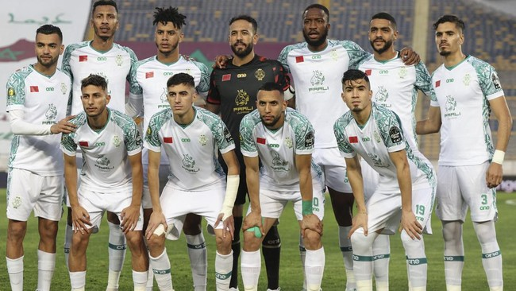

Sejumlah klub menunjukkan sikap solidaritas untuk Palestina yang sampai saat ini terus mendapatkan serangan dari Israel. Berikut klub-klub yang bersolidaritas untuk Palestina. Solidaritas untuk Palestina tidak saja dilakukan sejumlah kelompok suporter, namun juga ditunjukkan langsung klub-klub tersebut.Dukungan dan solidaritas untuk Palestina dari beberapa klub sepak bola di dunia ditunjukkan dengan berbagai sikap. Ada yang mendukung dengan menampilkan warna khas Palestina: hitam, hijau, putih, merah. Sebagian menunjukkan rasa setia kawan itu dengan membuat pernyataan. Mengumpulkan dana demi membantu Palestina juga jadi salah satu cerminan kepada negara Timur Tengah itu dari klub. Deportivo Palestino, klub asal Chile ini jadi salah satu yang terdepan dalam mendukung Palestina. Deportivo Palestino dibentuk komunitas imigran Palestina di Chile yang berdiri pada 1920.
Meski demikian, sejumlah klub ikut menunjukkan solidaritas untuk Palestina selain Deportivo Palestino: